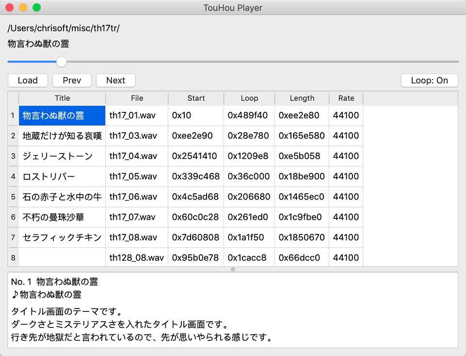
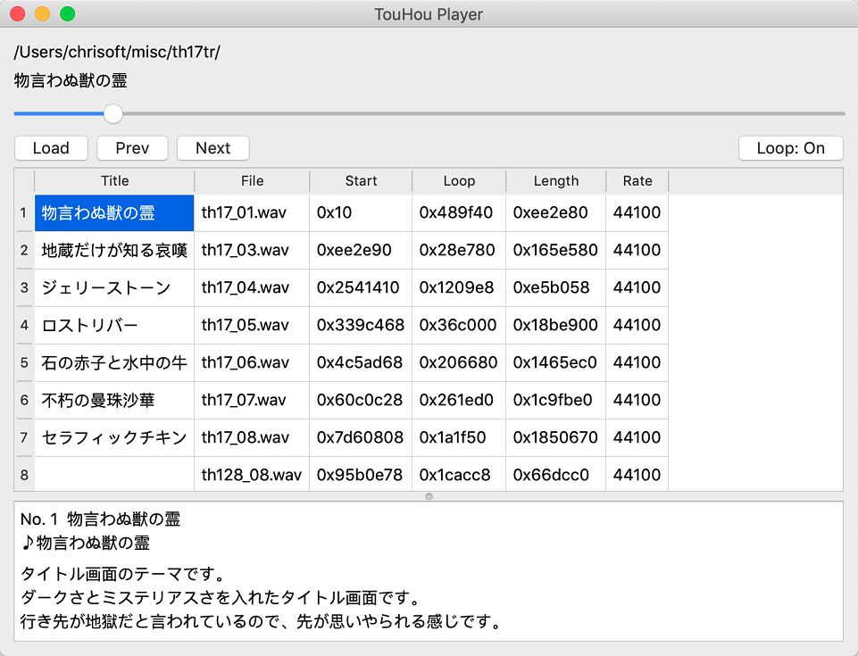

TouHou Player :: Download
Currently we have a experimental build for Windows. You can download the binary (v0.23) here:
Download v0.23 (thplayer_Qt_5_11_3_MinGW_32bit-Release.zip)Extra links: Source Tarball
You can also grab the source code and build it by your self!
Grab source at GitHubFor Archlinux user, you can get it from the Archlinux user repository.
AUR: thplayer-gitWe don't have a regular stable binary package release for now, so it's recommended to grab the source and build it by yourself!
Grab source at GitHubExtra links: Source Tarball
There is an outdated AppImage package which you can use. You can download the binary (v0.17) here:
Download v0.17 (THPlayer-x86_64.AppImage)This release is identical to v0.23 source-wise, only with an app bundle icon added. The release should be considered experimental.
Download v0.23 (thplayer.app.zip)Extra links: Source Tarball | Release Note
You can also grab the source code and build it by your self!
Grab source at GitHub
 
